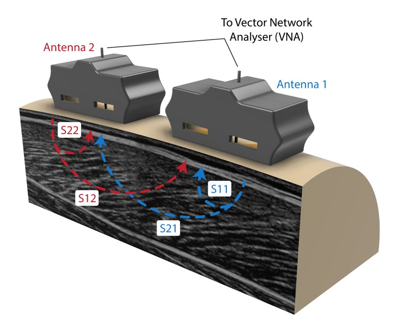

Engineering Project Portfolio
Tina (Shuting) Zheng
A small collection of my favourite projects as a final-year BE/ME Mechatronics student at UQ
Forces in Motion: Combining muscle-sensing tools with wearable exoskeletons during human walking
Neuromuscular Biomechanics Lab, UQ School of Biomedical Sciences
Role: Master's Thesis Student
Duration: January 2026 - Present
Key skills: Signal Processing • MATLAB & R • Electromyography • UWB Radar • Motion Capture • B-mode Ultrasound
This is an ongoing project from my Master's placement with the Neuromuscular Biomechanics Lab at UQ, which although is still in progress, has already allowed me to apply my skills in a research context and taught me a lot about biomechanics and the musculoskeletal system. This study investigates the feasibility of implementing ultrawide-band radar as a sensing modality during exoskeleton-assisted locomotion.
Motivation
Determining individual muscle forces is fundamentally important for many fields, as accurate estimations of musculoskeletal forces allow for applications such as providing a real-time control signal for prosthetics that enhance or restore motor performance, prevention and detection of injury in sports, or for assessing patient progression through a rehabilitation protocol [1, 2]. However, traditional methods involve invasive direct measurement which raises ethical concerns, or indirect calculations with musculoskeletal models which introduce large assumptions [3, 4]. Therefore, non-invasive assessment of muscle force remains one of the grand challenges in biomechanics [5].
UWB radar has demonstrated potential as a non-invasive approach for quantifying in vivo musculoskeletal forces. However, the physiological mechanisms underlying UWB radar signal changes are still largely unknown [6]. Consequently, interpretation of UWB radar signals from in vivo musculoskeletal applications requires further validation during muscle force production during more complex, dynamic conditions.

Representation of reflection coefficient (S11 and S22) and transmission coefficient (S21 and S12) signal paths. Adapted from [6].
Project Overview
This investigation explores the dynamic movement of the lower limbs during walking to examine relationships between musculoskeletal factors – in particular,
fascicle strain, strain rate, muscle force, and torque – and UWB radar signals. Walking will be performed on an instrumented treadmill under a range of controlled
conditions, including varying incline angles (0°, 5°), walking speeds (85%, 100%, and 115% of preferred walking speed (PWS)), and body-weight normalised assistive
exoskeleton torques provided to the ankle (0 and 0.15 Nm∙kg-1).
Since the exoskeleton provides ankle plantarflexion torque assistance, the lower limb muscles associated with the flexion of the ankle will be the primary focus of
the investigation, including the TA, MG, LG, and SOL. UWB radar signals will be acquired with Antenna 1 over the MG and Antenna 2 over the LG to capture electromagnetic
signal variations during dynamic walking. Data will be collected from twelve participants, and subsequently processed, to achieve two primary objectives:
- Decoupling musculoskeletal factors during walking under varying controlled conditions
- Identifying independent frequency-dependent relationships between musculoskeletal factors and UWB radar signal features
References
- Bird, C., et al., Ultra-wideband radar to measure in vivo musculoskeletal forces. 2025.
- Liu, J., et al., Non-invasive Quantitative Assessment of Muscle Force Based on Ultrasonic Shear Wave Elastography. Ultrasound in Medicine & Biology, 2019. 45(2): p. 440-451.
- Huxley, A.F. and R. Niedergerke, Structural Changes in Muscle During Contraction: Interference Microscopy of Living Muscle Fibres. Nature, 1954. 173(4412): p. 971-973.
- Hill, A.V., The heat of shortening and the dynamic constants of muscle. Proceedings of the Royal Society of London. B. Biological Sciences, 1938. 126(843): p. 136-195.
- Hug, F., et al., Elastography for Muscle Biomechanics: Toward the Estimation of Individual Muscle Force. Exercise and Sport Sciences Reviews, 2015. 43(3): p. 125-133.